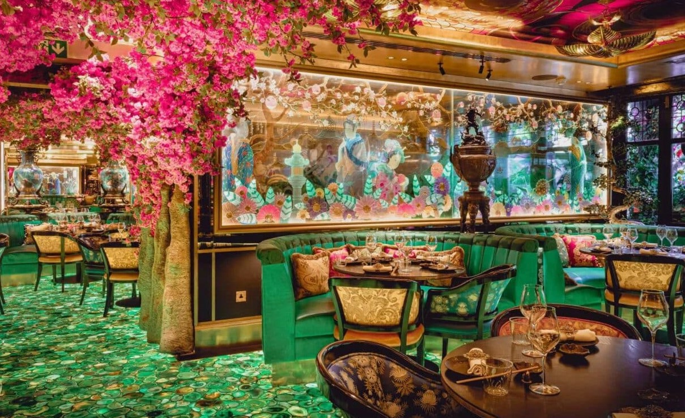

Bienvenue chez Gaïa
Découvrez une expérience culinaire hors du commun
Voir le menuA propos de nous
Notre restaurant propose des plats savoureux, dans une ambiance conviviale entre amis ou même en famille.
Avis clients

Une expérience superbe ! L’ambiance est conviviale et chaleureuse, parfaite pour un dîner entre amis. Les plats sont délicieux, notamment le Bœuf aux épices et la Tarte au citron. Le service est top et l’atmosphère agréable. À recommander sans hésiter !

Une bonne expérience dans l’ensemble. L’ambiance est agréable et conviviale, idéale pour un repas entre amis. Les plats sont bien présentés et savoureux, mêmesi certains manquaient un peu d’assaisonnement à mon goût. Le service est correct, bien que parfois un peu lent. Un bon restaurant, avec quelques petits points à améliorer.

Super soirée entre amis dans ce restaurant ! L’ambiance est conviviale et chaleureuse, parfaite pour passer un bon moment. Les plats étaient bien préparés et savoureux, avec une mention spéciale pour le Mignon de porc aux cinq épices et la Tarte au citron. Le service était sympathique et attentionné. On reviendra avec plaisir !